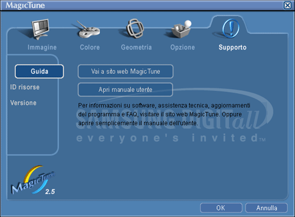

|
|
| Cenni generali | | Installazione | | Modalit‡ OSD | | Disinstallazione | | Risoluzione dei problemi |
|
| * Per verificare che il proprio PC supporta la funzione MagicTune, attenersi alla seguente procedura (esempio con Windows XP); Panello di controllo -> Prestazioni e manutenzione -> Sistema -> Hardware -> Gestione periferiche -> Schermi -> Dopo l'eliminazione del monitor Plug & Play, trovare "Monitor Plug & Play" eseguendo la ricerca di nuovo hardware. |
Visitare il sito
Web di MagicTune per assistenza tecnica su MagicTune, FAQ (risposte alle domande pi˘ frequenti)
e aggiornamenti del software.
| 
|
 Risoluzione dei problemi
Risoluzione dei problemi Controllo da effettuare quando MagicTune non funziona correttamente.
Controllo da effettuare quando MagicTune non funziona correttamente.